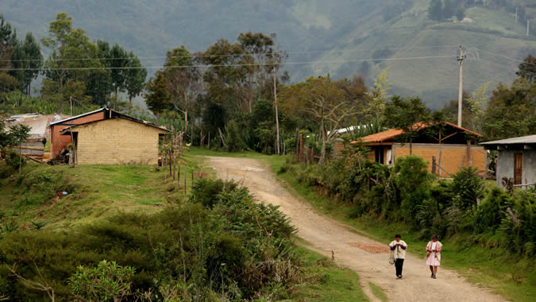
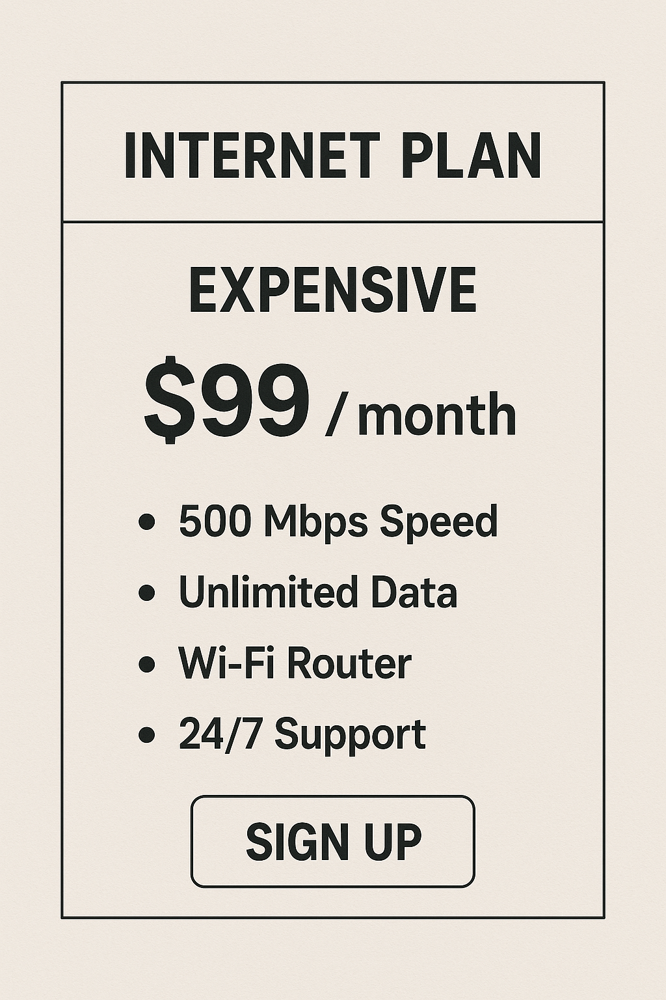
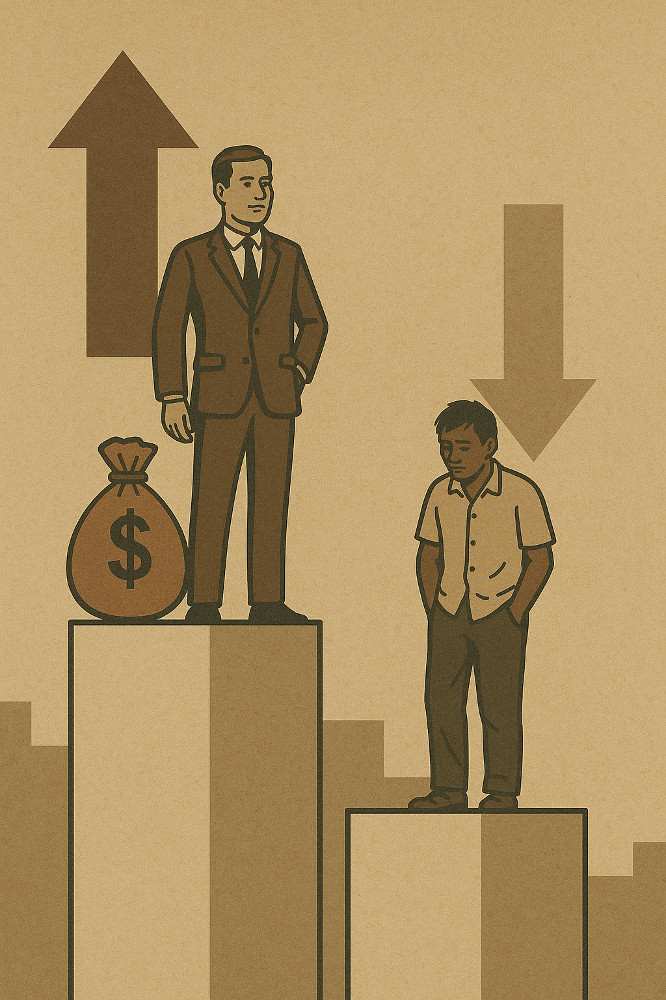

DOCTYPE html>
Exclusión Digital Un Desafío para Nuestra Sociedad
¿Quién queda fuera del click?
¿Qué es la exclusión digital?
La exclusión digital se refiere a la falta de acceso, habilidades o recursos para utilizar tecnologías digitales, como internet, computadoras o dispositivos móviles. Esta brecha impide que individuos y comunidades participen plenamente en actividades que dependen de la conectividad digital, afectando su calidad de vida y oportunidades.(Van Dijk, 2020)
Causas principales:
Falta de infraestructura: En áreas rurales, la falta de infraestructura de telecomunicaciones crea “zonas muertas” digitales. Según la Unión Internacional de Telecomunicaciones (UIT), el 63% de las personas sin acceso a internet en 2023 vivían en áreas rurales (UIT, 2023).

Costos elevados: Los altos costos de dispositivos y servicios de internet limitan el acceso, especialmente en hogares de bajos ingresos. Por ejemplo, en 2023, el costo promedio de 1 GB de datos móviles en América Latina fue de USD 1.05, un monto significativo para poblaciones de bajos recursos (GSMA, 2023).

Analfabetismo digital: La alfabetización digital es crucial, pero muchos carecen de formación. La UNESCO señala que el 24% de los adultos en países en desarrollo no tienen habilidades digitales básicas (UNESCO, 2021).
Desigualdades sociales: Grupos como adultos mayores, personas con discapacidades o comunidades marginadas enfrentan exclusión debido a barreras estructurales o discriminación (Van Deursen & Helsper, 2015)

¿Cómo nos afecta como sociedad?
La exclusión digital profundiza las desigualdades sociales y genera impactos significativos en múltiples áreas:
Educación: Los estudiantes sin internet enfrentan desventajas en el aprendizaje en línea. Durante la pandemia, el 30% de los estudiantes en América Latina no accedieron a educación remota por falta de conectividad (Banco Mundial, 2020).
Economía: Las oportunidades laborales requieren cada vez más habilidades digitales. En 2022, el 40% de los empleos en América Latina exigían competencias digitales básicas (OIT, 2022)
Salud: Los servicios de telemedicina y la información sanitaria en línea son inaccesibles para quienes están excluidos digitalmente.
Aislamiento social: La exclusión de plataformas digitales limita la comunicación y el sentido de comunidad (Hargittai, 2021)
Penetración global de internet
La adopción de internet varía significativamente entre regiones y países. Conoce los países con mayor y menor penetración de internet en el mundo.
Colombia ha avanzado en la expansión del acceso a internet, pero persisten desafíos significativos que perpetúan la exclusión digital.
Avances
Cerca del 70% de los hogares colombianos tienen acceso a internet (DANE, 2023).
La cobertura móvil 4G está disponible en la mayoría de las áreas urbanas.
Se han implementado miles de Zonas Digitales con Wi-Fi público gratuito en áreas urbanas y rurales.
En 2025, Colombia cuenta con 41.1 millones de usuarios de internet, lo que representa una penetración del 77.3% de la población. Esto supera el promedio latinoamericano, pero aún deja a 12.1 millones de personas desconectadas, especialmente en zonas rurales y comunidades de bajos ingresos.(DANE, 2023)
Desafíos
En zonas rurales, solo el 30-35% de los hogares tienen acceso a internet fijo o móvil.
Existe una brecha digital regional, con mayor conectividad en Bogotá, Medellín y Bucaramanga en comparación con Chocó, La Guajira o Vaupés.(MinTIC, 2023)
La brecha digital en Colombia se sitúa en un 33%, según el Ministerio de Tecnologías de la Información y Comunicaciones (MinTIC). Esto incluye no solo la falta de acceso a internet, sino también la carencia de dispositivos y habilidades digitales.
La brecha de habilidades digitales limita el uso productivo de la tecnología, incluso entre quienes tienen acceso.
Bucaramanga
La conectividad a internet en Bucaramanga ha experimentado avances significativos en los últimos años, posicionándose como una de las ciudades con mejor infraestructura digital en Colombia.
Zonas WiFi gratuitas: El municipio cuenta con varias zonas WiFi distribuidas en toda la ciudad, operativas las 24 horas. Cada punto puede soportar hasta 1,024 dispositivos simultáneamente, con un ancho de banda de hasta 250 Mbps y una cobertura de aproximadamente 200 metros.
La exclusión digital es un desafío crítico que requiere esfuerzos coordinados para garantizar un acceso equitativo a las tecnologías digitales. En Colombia, los avances en infraestructura y políticas públicas son prometedores, pero las brechas regionales, socioeconómicas y de habilidades deben abordarse para reducir la desigualdad digital y fomentar una sociedad más inclusiva.